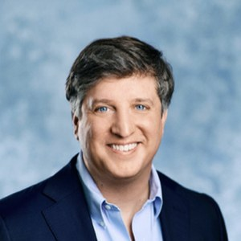

Founded on a simple belief: reducing global health inequity is among the most meaningful ways surgeons can apply their skills, training, and privilege.
A landmark international gathering of thought leaders in global plastic and reconstructive surgery. Over three days, it convenes surgeons, educators, NGO leaders, industry innovators, and policymakers to develop actionable strategies for advancing surgical equity in underserved communities worldwide.
Global plastic surgery efforts have often developed in parallel rather than in partnership — across institutions, specialties, NGOs, industry, and geographic regions. Until now, there has been no true forum dedicated to bringing those people together. The Union Summit exists to change that.
Through keynotes, expert panels, and structured breakout groups, the Summit catalyzes sustainable partnerships and elevates the field — reducing silos, building consensus, and identifying practical strategies that move global surgical equity forward.
Every Union Summit is built on the same foundation, whatever that year's focus turns out to be.
Invite-only and intentionally small — fewer than 100 people — bringing together thought leaders across the field rather than an open registration.
Genuinely global participation, not just global topics. Registration is free for every participant, and the Summit prioritizes travel and accommodations for international participants so the room reflects the world it's discussing.
The constant throughout every Summit, even as each event's specific theme may vary — reducing surgical inequity for underserved communities worldwide.
We are humbled by the extraordinary talent assembled here. We are truly among giants, and we are honored to learn from one another.Brian Christie, MD, MPH & Samuel O. Poore, MD, PhD — Co-Founders, The Union Summit
A reconstructive microsurgeon and global surgery leader, Dr. Poore holds the Distinguished Endowed Chair of Global Education in Plastic and Reconstructive Surgery at UW–Madison. He has dedicated much of his career to expanding access to complex reconstructive care through sustainable surgical education and international partnership, establishing microsurgical training programs across Africa, Asia, Latin America, and Eastern Europe — including Vietnam, Rwanda, Burundi, South Africa, Egypt, Nicaragua, Panama, and the Dominican Republic. He is co-founder of WiscVision, an initiative using low-cost, high-fidelity 3D-printed surgical microscopes and open-access educational resources to democratize microsurgical education worldwide. He and his team recently helped establish a training partnership bringing frontline Ukrainian war surgeons to Wisconsin for advanced reconstructive and microsurgical training. Dr. Poore has authored more than 150 peer-reviewed publications and served as editor of Extremity Replantation: A Comprehensive Clinical Guide.

Dr. Christie completed his medical education at Duke School of Medicine, residency in Plastic and Reconstructive Surgery at the University of Wisconsin, a Master of Public Health at Harvard T.H. Chan School of Public Health, and a Hand and Upper Extremity Fellowship at Stanford University. His dedication to global surgery spans nearly two decades: he co-founded SALAMA, a nonprofit advancing child health and education in Tanzania, and served as Director of Global Plastic and Reconstructive Surgery at Indiana University, leading the IU–Moi University partnership in Eldoret, Kenya — a program that produced the first hand replantation and first free flap in western Kenya. He serves on the ASSH International Outreach Committee and Access Task Force and is a contributor to the UN Global Surgery Learning Hub. The Union Summit is the realization of Dr. Christie's vision for a purposeful, international forum where surgeons, educators, NGO leaders, and policymakers can forge the durable collaborations needed to advance reconstructive surgical care for underserved communities worldwide.